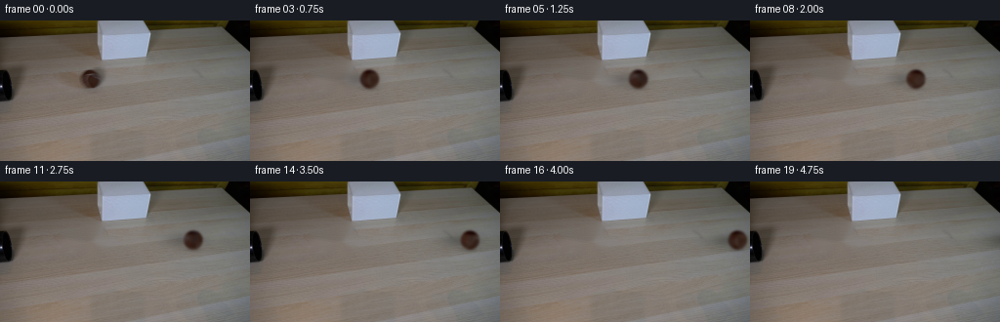
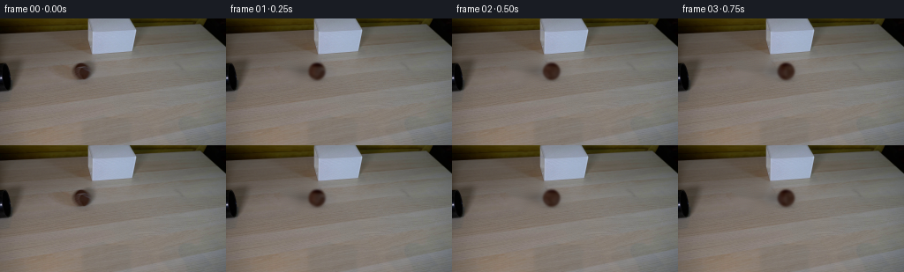
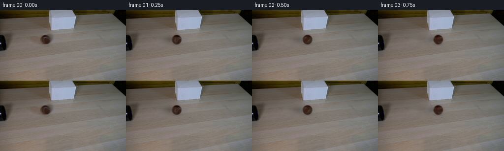

CODING AGENTS AS PIXEL WORLD MODELS
traex/GPT-6.1-Sol · 0148
点击播放 · 原生 RGB 像素
逐轮保存的候选
回放视频、检查图与代码变化。
每份候选均可单独播放。实际图片检查记录在下方工具轨迹中。
候选 01播放与检查图
点击播放 · 原生 RGB 像素


展开代码变化
--- 上一保存版本
+++ 本次保存版本
@@ -0,0 +1,137 @@
+from pathlib import Path
+import numpy as np
+import cv2
+from PIL import Image
+from scipy.ndimage import gaussian_filter
+import artifact_io
+
+# A stationary photographic plate with a rolling, textured sphere.
+CASE = Path(__file__).resolve().parent
+H, W = 144, 256
+S = 4
+CX, CY, R = 92.87607181, 59.61252351, 9.66132715
+BASE = np.array([49.7601593,29.8627819,21.8013738])
+SIDE = np.array([4.5835902,0.0,0.0])
+CAP = np.array([28.8232398,33.0815208,34.9970701])
+
+
+def illumination(nx, ny):
+ side = np.exp(-((nx+.58)/.40)**2-((ny+.02)/.75)**2)
+ cap = np.exp(-((ny+.83)/.22)**2-(nx/.85)**2)
+ return np.maximum(2.,BASE+side[...,None]*SIDE-cap[...,None]*CAP)
+
+
+def shadow(x,y,cx,cy,r):
+ # Wide, softly lit cast shadow and the small contact shadow.
+ z = .22*np.exp(-.5*(((x-(cx-10.0))/13.)**2+((y-(cy+.2))/5.0)**2))
+ z += .14*np.exp(-.5*(((x-cx)/6.5)**2+((y-(cy+r+.2))/1.5)**2))
+ return np.minimum(z,.48)
+
+
+def prepare(photo):
+ mask=np.zeros((H,W),np.uint8)
+ cv2.fillPoly(mask,[np.array([[62,51],[79,49],[87,47],[103,47],
+ [108,52],[110,67],[104,74],[86,76],[76,70],[62,65],[59,58]],np.int32)],255)
+ repaired=cv2.inpaint(photo,mask,4,cv2.INPAINT_TELEA).astype(np.float32)
+ # Restore the subtle photographic grain inside the exposed tabletop.
+ grain=photo.astype(np.float32)-gaussian_filter(photo.astype(np.float32),(1.,1.,0))
+ donor=np.roll(grain,-49,axis=1)
+ inner=np.clip(cv2.distanceTransform(mask,cv2.DIST_L2,3)/3.,0,1)
+ repaired += .62*donor*inner[...,None]
+ background=np.where(mask[...,None]>0,repaired,photo).astype(np.float32)
+
+ xs=(np.arange(W*S,dtype=np.float32)+.5)/S-.5
+ ys=(np.arange(H*S,dtype=np.float32)+.5)/S-.5
+ xx,yy=np.meshgrid(xs,ys)
+ nx=(xx-CX)/R;ny=(yy-CY)/R
+ d=np.sqrt(nx*nx+ny*ny)
+ alpha=np.clip((1-d)*R*S+.5,0,1)
+ src_p=gaussian_filter(illumination(nx,ny)*alpha[...,None],(1.22*S,1.22*S,0))
+ src_a=gaussian_filter(alpha,1.22*S)
+ a=src_a.reshape(H,S,W,S).mean((1,3))
+ p=src_p.reshape(H,S,W,S,3).mean((1,3))
+ x,y=np.meshgrid(np.arange(W,dtype=np.float32),np.arange(H,dtype=np.float32))
+ shaded=background*(1-shadow(x,y,CX,CY,R)[...,None])
+ # Recover the source's nonuniform felt and its characteristic pale seam.
+ residual=(photo.astype(np.float32)-shaded*(1-a[...,None])-p)/np.maximum(a[...,None],.18)
+ residual=np.clip(residual,-12.,45.)
+ radial=np.sqrt(((x-CX)/R)**2+((y-CY)/R)**2)
+ residual *= np.clip((1.04-radial)/.16,0,1)[...,None]
+ residual=gaussian_filter(residual,(.28,.28,0))
+ return background,residual
+
+
+def render(background, material, distance, exposure_shift=0.):
+ cx=CX+distance+exposure_shift
+ cy=CY
+ r=R
+ # A bounded patch leaves every stationary object exactly unchanged.
+ x0=max(0,int(np.floor(cx-52)));x1=min(W,int(np.ceil(cx+22)))
+ y0=43;y1=80
+ out=background.copy()
+ if x0>=x1:
+ return out
+ xs=x0+(np.arange((x1-x0)*S,dtype=np.float32)+.5)/S-.5
+ ys=y0+(np.arange((y1-y0)*S,dtype=np.float32)+.5)/S-.5
+ x,y=np.meshgrid(xs,ys)
+ nx=(x-cx)/r;ny=(y-cy)/r
+ rad=np.sqrt(nx*nx+ny*ny)
+ nz=np.sqrt(np.maximum(0,1-rad*rad))
+ a=np.clip((1-rad)*r*S+.5,0,1)
+ # Inverse rotation about the no-slip rolling axis on the tabletop.
+ angle=(distance+exposure_shift)/r
+ co=np.cos(angle);si=np.sin(angle)
+ ay,az=.768375,.639999
+ dot=ay*ny+az*nz
+ tx=nx*co-(ay*nz-az*ny)*si
+ ty=ny*co-az*nx*si+ay*dot*(1-co)
+ # The unobserved rear hemisphere uses a continuous mirrored felt map.
+ u=(CX+r*tx).astype(np.float32)
+ v=(CY+r*ty).astype(np.float32)
+ felt=cv2.remap(material,u,v,cv2.INTER_LINEAR,borderMode=cv2.BORDER_CONSTANT)
+ color=illumination(nx,ny)+felt
+ # Small, fixed surface-fiber variations rotate with the ball, not the shot.
+ tz=nz*co+ay*nx*si+az*dot*(1-co)
+ fuzz=.45*(np.sin(75*tx+41*ty+28*tz)+.45*np.sin(113*ty-62*tz+39*tx))
+ color=np.clip(color+fuzz[...,None],1,150)
+ premult=gaussian_filter(color*a[...,None],(1.12*S,1.12*S,0))
+ a=gaussian_filter(a,1.12*S)
+ patch=cv2.remap(background,x.astype(np.float32),y.astype(np.float32),cv2.INTER_LINEAR,borderMode=cv2.BORDER_REPLICATE)
+ patch*=1-shadow(x,y,cx,cy,r)[...,None]
+ composite=patch*(1-a[...,None])+premult
+ composite=composite.reshape(y1-y0,S,x1-x0,S,3).mean((1,3))
+ # Supersampling is applied to the moving layer only, not to the photo.
+ # Restore the static grain where sphere and shadow have negligible influence.
+ active=(a+shadow(x,y,cx,cy,r)).reshape(y1-y0,S,x1-x0,S).mean((1,3))
+ # Static source interpolations cause an avoidable slight blur, so preserve
+ # the low-influence parts and compensate in the actual moving patch.
+ interp=patch/(1-shadow(x,y,cx,cy,r)[...,None])
+ interp=interp.reshape(y1-y0,S,x1-x0,S,3).mean((1,3))
+ composite+=(background[y0:y1,x0:x1]-interp)*(1-np.clip(active,0,1))[...,None]
+ out[y0:y1,x0:x1]=composite
+ return out
+
+
+def main():
+ photo=np.array(Image.open(CASE/'first_frame.png').convert('RGB'))
+ background,material=prepare(photo)
+ (CASE/'.tmp').mkdir(exist_ok=True)
+ Image.fromarray(np.clip(background,0,255).astype(np.uint8)).save(CASE/'.tmp'/'clean_plate.png')
+ test=render(background,material,0.)
+ Image.fromarray(np.clip(test,0,255).astype(np.uint8)).save(CASE/'.tmp'/'reconstructed_start.png')
+ frames=[photo.copy()]
+ for i in range(1,20):
+ t=i/4.
+ distance=39.1*t-.4*t*t
+ speed=39.1-.8*t
+ # Short real-time camera exposure, with no temporal easing or trails.
+ frame=(render(background,material,distance,-speed*.006)+
+ render(background,material,distance,speed*.006))*.5
+ frames.append(np.clip(np.rint(frame),0,255).astype(np.uint8))
+ frames=np.stack(frames)
+ assert np.array_equal(frames[0],photo)
+ artifact_io.save(frames,CASE)
+
+
+if __name__=='__main__':
+ main()
候选 02播放与检查图
点击播放 · 原生 RGB 像素

展开代码变化
--- 上一保存版本
+++ 本次保存版本
@@ -10,6 +10,7 @@
H, W = 144, 256
S = 4
CX, CY, R = 92.87607181, 59.61252351, 9.66132715
+SIGMA = .72
BASE = np.array([49.7601593,29.8627819,21.8013738])
SIDE = np.array([4.5835902,0.0,0.0])
CAP = np.array([28.8232398,33.0815208,34.9970701])
@@ -46,8 +47,8 @@
nx=(xx-CX)/R;ny=(yy-CY)/R
d=np.sqrt(nx*nx+ny*ny)
alpha=np.clip((1-d)*R*S+.5,0,1)
- src_p=gaussian_filter(illumination(nx,ny)*alpha[...,None],(1.22*S,1.22*S,0))
- src_a=gaussian_filter(alpha,1.22*S)
+ src_p=gaussian_filter(illumination(nx,ny)*alpha[...,None],(SIGMA*S,SIGMA*S,0))
+ src_a=gaussian_filter(alpha,SIGMA*S)
a=src_a.reshape(H,S,W,S).mean((1,3))
p=src_p.reshape(H,S,W,S,3).mean((1,3))
x,y=np.meshgrid(np.arange(W,dtype=np.float32),np.arange(H,dtype=np.float32))
@@ -94,8 +95,8 @@
tz=nz*co+ay*nx*si+az*dot*(1-co)
fuzz=.45*(np.sin(75*tx+41*ty+28*tz)+.45*np.sin(113*ty-62*tz+39*tx))
color=np.clip(color+fuzz[...,None],1,150)
- premult=gaussian_filter(color*a[...,None],(1.12*S,1.12*S,0))
- a=gaussian_filter(a,1.12*S)
+ premult=gaussian_filter(color*a[...,None],(SIGMA*S,SIGMA*S,0))
+ a=gaussian_filter(a,SIGMA*S)
patch=cv2.remap(background,x.astype(np.float32),y.astype(np.float32),cv2.INTER_LINEAR,borderMode=cv2.BORDER_REPLICATE)
patch*=1-shadow(x,y,cx,cy,r)[...,None]
composite=patch*(1-a[...,None])+premult
@@ -115,6 +116,15 @@
def main():
photo=np.array(Image.open(CASE/'first_frame.png').convert('RGB'))
background,material=prepare(photo)
+ # Match the actual initial felt and seam rather than substituting a clean
+ # computer-graphic tennis-ball texture. Refinement only uses source RGB.
+ yy,xx=np.mgrid[:H,:W]
+ radius=np.sqrt(((xx-CX)/R)**2+((yy-CY)/R)**2)
+ weight=np.clip((1.04-radius)/.15,0,1)
+ for _ in range(14):
+ reconstruction=render(background,material,0.)
+ error=photo.astype(np.float32)-reconstruction
+ material=np.clip(material+.70*error*weight[...,None],-60,150)*weight[...,None]
(CASE/'.tmp').mkdir(exist_ok=True)
Image.fromarray(np.clip(background,0,255).astype(np.uint8)).save(CASE/'.tmp'/'clean_plate.png')
test=render(background,material,0.)
可观测工具轨迹
实际执行的命令与返回图片。
命令 1exit 0
/bin/bash -lc 'ls -la && cat prompt.txt && cat GENERATION_RULES.md'
命令 2exit 0
/bin/bash -lc "cat artifact_io.py && python - <<'PY'
from PIL import Image
import numpy as np
im=np.array(Image.open('first_frame.png'))
print(im.shape)
# averaged block colors and grayscale ASCII
im=im[:,:,:3]
g=im.mean(2)
cs='@%#*+=-:. '
for y in range(0,144,3):
print(''.join(cs[min(9,int(g[y:y+3,x:x+3].mean()/256*10))] for x in range(0,256,3)))
PY"命令 3exit 0
/bin/bash -lc "python - <<'PY'
from PIL import Image
import numpy as np
im=np.array(Image.open('first_frame.png'))
for y in range(0,86,2):
s=''
for x in range(0,170,2):
r,g,b=im[y:y+2,x:x+2].mean((0,1))
if max(r,g,b)<25: c='@'
elif max(r,g,b)<50:c='#'
elif max(r,g,b)<75:c='X'
elif max(r,g,b)<100:c='o'
elif r-g>20 and g-b>15:c='w' if r>140 else 'b'
elif r-g>8 and g-b>4:c='t' if r>120 else 'd'
elif min(r,g,b)>190:c='.'
elif min(r,g,b)>140:c=':'
elif min(r,g,b)>100:c='*'
else:c='-'
s+=c
print(f'{y:03d} '+s)
print('\\nREGION RGB:')
for y in range(46,75,2):
print('y',y,[(x,tuple(im[y,x])) for x in range(60,105,3)])
PY"命令 4exit 0
/bin/bash -lc "python - <<'PY'
import numpy as np
from PIL import Image
im=np.array(Image.open('first_frame.png')).astype(int)
for y in range(40,91):
print(f'{y:02}', ''.join('0123456789ABCDEF'[min(15,int(im[y,x].mean()/16))] for x in range(0,112)))
# mean intensity/color in ball and bright/dark candidates
print('ball rows edge extent')
for y in range(48,72):
xs=np.where(im[y,76:111].mean(1)<80)[0]+76
print(y, xs.tolist())
PY"命令 5exit 0
/bin/bash -lc "python - <<'PY'
import importlib.util
for m in ['cv2','scipy','numpy','PIL']:
print(m, bool(importlib.util.find_spec(m)))
from PIL import Image
import numpy as np
im=np.array(Image.open('first_frame.png')).astype(float)
# fine intensity of ball
for y in range(46,77):
print('%02d '%y+''.join(' .,:;ox%#@'[min(9,int(im[y,x].mean()/128*10))] for x in range(72,114)))
# bright curved seam over ball sampling
print(im[49:70,81:106].mean((0,1)))
PY"命令 6exit 0
/bin/bash -lc "python - <<'PY'
from PIL import Image
import numpy as np
im=np.array(Image.open('first_frame.png')).astype(float)
for y in range(48,77,2):
print(y,[(x,tuple(np.round(im[y-1:y+2,x-2:x+3].mean((0,1))).astype(int))) for x in range(40,161,10)])
PY"命令 7exit 1
/bin/bash -lc "python - <<'PY'
from PIL import Image
import numpy as np
im=np.array(Image.open('first_frame.png'))
for y in range(50,70):
print(y,' '.join('%3d'%int(np.mean(im[y,x])) for x in range(82,105))))
PY"命令 8exit 0
/bin/bash -lc "python - <<'PY'
from PIL import Image
import numpy as np
im=np.array(Image.open('first_frame.png'))
for y in range(50,70):
print(y,' '.join('%3d'%int(np.mean(im[y,x])) for x in range(82,105)))
PY"命令 9exit 0
/bin/bash -lc "mkdir -p .tmp && python - <<'PY'
from PIL import Image
import numpy as np,cv2
im=np.array(Image.open('first_frame.png'))
y,x=np.mgrid[:144,:256]
mask=np.zeros((144,256),np.uint8)
cv2.fillPoly(mask,[np.array([[85,48],[103,48],[108,54],[108,67],[101,74],[82,74],[75,66],[75,56]],np.int32)],255)
bg=cv2.inpaint(im,mask,4,cv2.INPAINT_TELEA)
Image.fromarray(bg).save('.tmp/bg_telea.png')
for cy,cx,r in [(59.6,93.7,8.6),(59.7,93.6,9.0),(59.6,93.5,8.9)]:
dx=(x-cx)/r;dy=(y-cy)/r;dist=dx*dx+dy*dy
nz=np.sqrt(np.maximum(0,1-dist))
m=(dist<.63)
A=np.stack([np.ones_like(dx),dx,dy,nz],-1)[m]
colors=im[m].astype(float)
coef=np.linalg.lstsq(A,colors,rcond=None)[0]
for _ in range(8):
resid=np.linalg.norm(colors-A@coef,axis=1)
w=np.minimum(1,9/(resid+.01))
coef=np.linalg.lstsq(A*w[:,None],colors*w[:,None],rcond=None)[0]
print(cx,cy,r,'coef',coef.round(2),'pred center',(np.array([1,0,0,1])@coef).round(2))
print('res',np.percentile(resid,[10,50,90]))
PY"命令 10exit 0
/bin/bash -lc "python - <<'PY'
import numpy as np
from PIL import Image
from scipy.ndimage import gaussian_filter
im=np.array(Image.open('first_frame.png')).astype(float)
# output actual shadow attenuation profile
for y in [50,54,58,62,66,70,74]:
print(y,[(x, int(im[y-1:y+2,x-2:x+3].mean())) for x in [25,35,45,55,65,75,85,95,105,115,125,135]])
PY"命令 11exit 0
/bin/bash -lc "python - <<'PY'
import cv2,numpy as np
from PIL import Image
im=np.array(Image.open('first_frame.png'))
mask=np.zeros((144,256),np.uint8)
cv2.fillPoly(mask,[np.array([[62,51],[79,49],[87,47],[103,47],[108,52],[110,67],[104,74],[86,76],[76,70],[62,65],[59,58]],np.int32)],255)
bg=cv2.inpaint(im,mask,4,cv2.INPAINT_TELEA)
Image.fromarray(bg).save('.tmp/background.png')
for y in [50,54,58,62,66,70,74]:
print(y,[(x,tuple(bg[y,x])) for x in [55,65,75,85,95,105,115]])
PY"命令 12exit 0
/bin/bash -lc "python - <<'PY'
import numpy as np
from PIL import Image
im=np.array(Image.open('first_frame.png')).astype(float)
y,x=np.mgrid[:144,:256];dx=(x-93.4)/9.0;dy=(y-59.6)/9.0;nz=np.sqrt(np.maximum(0,1-dx*dx-dy*dy));m=dx*dx+dy*dy<.6
A=np.stack([np.ones_like(dx),dx,dy],-1)[m];co=im[m]
c=np.linalg.lstsq(A,co,rcond=None)[0]
for _ in range(10):
res=np.linalg.norm(co-A@c,axis=1);w=np.minimum(1,5/(res+.001));c=np.linalg.lstsq(A*w[:,None],co*w[:,None],rcond=None)[0]
print(c)
PY"命令 13exit 0
/bin/bash -lc "python - <<'PY'
import numpy as np
from PIL import Image
im=np.array(Image.open('first_frame.png')).astype(float)
y,x=np.mgrid[:144,:256]
q=(x-93.5)/9;s=(y-59.6)/9;z=np.sqrt(np.maximum(0,1-q*q-s*s));base=np.stack([np.ones_like(q),q,s,z],-1)@np.array([[79.38,65.79,66.15],[-4.79,-2.89,-2.12],[-9.28,-15.61,-21.36],[-28.56,-34.24,-41.46]])
b=im.mean(2)-base.mean(2)
for yy in range(51,69):
print(yy,''.join(' ' if q[yy,xx]**2+s[yy,xx]**2>.85 else ('@' if b[yy,xx]>25 else '#' if b[yy,xx]>18 else '*' if b[yy,xx]>10 else '+' if b[yy,xx]>5 else '.' if b[yy,xx]>0 else '_') for xx in range(83,105)))
PY"命令 14exit 0
/bin/bash -lc "cat > .tmp/fit_ball.py <<'PY'
import numpy as np, cv2
from PIL import Image
from scipy.optimize import least_squares
from scipy.ndimage import gaussian_filter
im=np.array(Image.open('first_frame.png')).astype(np.float32)
mask=np.zeros((144,256),np.uint8)
cv2.fillPoly(mask,[np.array([[62,51],[79,49],[87,47],[103,47],[108,52],[110,67],[104,74],[86,76],[76,70],[62,65],[59,58]],np.int32)],255)
bg=cv2.inpaint(im.astype(np.uint8),mask,4,cv2.INPAINT_TELEA).astype(float)
S=3;X,Y=np.meshgrid(72+(np.arange(39*S)+.5)/S-.5,45+(np.arange(31*S)+.5)/S-.5)
back=cv2.resize(bg[45:76,72:111],(39*S,31*S),interpolation=cv2.INTER_LINEAR)
# ball fit approximate same seam/shape as source
# [cx,cy,r,sigma, base3, left3, top3, seam3, width, n_zcoef, xxcoef,xcoef]
def render(p):
cx,cy,r,sigma=p[:4];base=p[4:7];lit=p[7:10];dark=p[10:13];seamcol=p[13:16];width,zco,xxco,xco=p[16:]
nx=(X-cx)/r;ny=(Y-cy)/r;dist=np.sqrt(nx*nx+ny*ny);nz=np.sqrt(np.maximum(0,1-dist*dist))
a=np.clip((1-dist)*S*r+.5,0,1)
light=np.exp(-((nx+.58)/.40)**2-((ny+.02)/.75)**2)
cap=np.exp(-((ny+.83)/.22)**2-(nx/.85)**2)
color=base+light[...,None]*lit-cap[...,None]*dark
F=ny+zco*nz-xxco*nx*nx-xco*nx
grad=np.sqrt(1+zco*zco+(-2*xxco*nx-xco)**2)
seam=np.exp(-.5*(F/grad/width)**2)
color=color*(1-seam[...,None])+seamcol*seam[...,None]
sh=.22*np.exp(-.5*(((X-(cx-10))/13)**2+((Y-(cy+.2))/5.0)**2))
sh+=.14*np.exp(-.5*(((X-cx)/6.5)**2+((Y-(cy+r+.2))/1.5)**2))
b=back*(1-sh[...,None])
premul=gaussian_filter(color*a[...,None],(sigma*S,sigma*S,0))
a=gaussian_filter(a,sigma*S)
out=b*(1-a[...,None])+premul
return out.reshape(31,S,39,S,3).mean((1,3))
p=[93.5,59.5,9,.7,52,32,25,10,12,14,13,13,13,90,80,74,.055,.50,1.4,.25]
lo=[92,58,8,.1,35,15,8,0,0,0,0,0,0,50,40,30,.025,.15,.5,-.5]
hi=[95,61,11,1.4,75,60,50,40,40,40,35,35,35,140,130,130,.15,1.,2.4,.8]
tar=im[45:76,72:111];weights=np.ones((31,39,1))
y,x=np.mgrid[45:76,72:111];weights[((x-93.5)**2+(y-59.5)**2)<9.5**2]=1.7
res=least_squares(lambda p:((render(p)-tar)*weights).ravel(),p,bounds=(lo,hi),diff_step=.003,max_nfev=110,loss='soft_l1',f_scale=5)
print('PARAMS',res.x.tolist());print('error',np.sqrt(np.mean((render(res.x)-tar)**2)))
np.save('.tmp/fit_params.npy',res.x)
comp=bg.copy();comp[45:76,72:111]=render(res.x)
Image.fromarray(comp.clip(0,255).astype(np.uint8)).save('.tmp/ball_fit.png')
PY
OPENBLAS_NUM_THREADS=1 python .tmp/fit_ball.py"命令 15exit 0
/bin/bash -lc "cat > generate.py <<'PY'
from pathlib import Path
import numpy as np
import cv2
from PIL import Image
from scipy.ndimage import gaussian_filter
import artifact_io
# A stationary photographic plate with a rolling, textured sphere.
CASE = Path(__file__).resolve().parent
H, W = 144, 256
S = 4
CX, CY, R = 92.87607181, 59.61252351, 9.66132715
BASE = np.array([49.7601593,29.8627819,21.8013738])
SIDE = np.array([4.5835902,0.0,0.0])
CAP = np.array([28.8232398,33.0815208,34.9970701])
def illumination(nx, ny):
side = np.exp(-((nx+.58)/.40)**2-((ny+.02)/.75)**2)
cap = np.exp(-((ny+.83)/.22)**2-(nx/.85)**2)
return np.maximum(2.,BASE+side[...,None]*SIDE-cap[...,None]*CAP)
def shadow(x,y,cx,cy,r):
# Wide, softly lit cast shadow and the small contact shadow.
z = .22*np.exp(-.5*(((x-(cx-10.0))/13.)**2+((y-(cy+.2))/5.0)**2))
z += .14*np.exp(-.5*(((x-cx)/6.5)**2+((y-(cy+r+.2))/1.5)**2))
return np.minimum(z,.48)
def prepare(photo):
mask=np.zeros((H,W),np.uint8)
cv2.fillPoly(mask,[np.array([[62,51],[79,49],[87,47],[103,47],
[108,52],[110,67],[104,74],[86,76],[76,70],[62,65],[59,58]],np.int32)],255)
repaired=cv2.inpaint(photo,mask,4,cv2.INPAINT_TELEA).astype(np.float32)
# Restore the subtle photographic grain inside the exposed tabletop.
grain=photo.astype(np.float32)-gaussian_filter(photo.astype(np.float32),(1.,1.,0))
donor=np.roll(grain,-49,axis=1)
inner=np.clip(cv2.distanceTransform(mask,cv2.DIST_L2,3)/3.,0,1)
repaired += .62*donor*inner[...,None]
background=np.where(mask[...,None]>0,repaired,photo).astype(np.float32)
xs=(np.arange(W*S,dtype=np.float32)+.5)/S-.5
ys=(np.arange(H*S,dtype=np.float32)+.5)/S-.5
xx,yy=np.meshgrid(xs,ys)
nx=(xx-CX)/R;ny=(yy-CY)/R
d=np.sqrt(nx*nx+ny*ny)
alpha=np.clip((1-d)*R*S+.5,0,1)
src_p=gaussian_filter(illumination(nx,ny)*alpha[...,None],(1.22*S,1.22*S,0))
src_a=gaussian_filter(alpha,1.22*S)
a=src_a.reshape(H,S,W,S).mean((1,3))
p=src_p.reshape(H,S,W,S,3).mean((1,3))
x,y=np.meshgrid(np.arange(W,dtype=np.float32),np.arange(H,dtype=np.float32))
shaded=background*(1-shadow(x,y,CX,CY,R)[...,None])
# Recover the source's nonuniform felt and its characteristic pale seam.
residual=(photo.astype(np.float32)-shaded*(1-a[...,None])-p)/np.maximum(a[...,None],.18)
residual=np.clip(residual,-12.,45.)
radial=np.sqrt(((x-CX)/R)**2+((y-CY)/R)**2)
residual *= np.clip((1.04-radial)/.16,0,1)[...,None]
residual=gaussian_filter(residual,(.28,.28,0))
return background,residual
def render(background, material, distance, exposure_shift=0.):
cx=CX+distance+exposure_shift
cy=CY
r=R
# A bounded patch leaves every stationary object exactly unchanged.
x0=max(0,int(np.floor(cx-52)));x1=min(W,int(np.ceil(cx+22)))
y0=43;y1=80
out=background.copy()
if x0>=x1:
return out
xs=x0+(np.arange((x1-x0)*S,dtype=np.float32)+.5)/S-.5
ys=y0+(np.arange((y1-y0)*S,dtype=np.float32)+.5)/S-.5
x,y=np.meshgrid(xs,ys)
nx=(x-cx)/r;ny=(y-cy)/r
rad=np.sqrt(nx*nx+ny*ny)
nz=np.sqrt(np.maximum(0,1-rad*rad))
a=np.clip((1-rad)*r*S+.5,0,1)
# Inverse rotation about the no-slip rolling axis on the tabletop.
angle=(distance+exposure_shift)/r
co=np.cos(angle);si=np.sin(angle)
ay,az=.768375,.639999
dot=ay*ny+az*nz
tx=nx*co-(ay*nz-az*ny)*si
ty=ny*co-az*nx*si+ay*dot*(1-co)
# The unobserved rear hemisphere uses a continuous mirrored felt map.
u=(CX+r*tx).astype(np.float32)
v=(CY+r*ty).astype(np.float32)
felt=cv2.remap(material,u,v,cv2.INTER_LINEAR,borderMode=cv2.BORDER_CONSTANT)
color=illumination(nx,ny)+felt
# Small, fixed surface-fiber variations rotate with the ball, not the shot.
tz=nz*co+ay*nx*si+az*dot*(1-co)
fuzz=.45*(np.sin(75*tx+41*ty+28*tz)+.45*np.sin(113*ty-62*tz+39*tx))
color=np.clip(color+fuzz[...,None],1,150)
premult=gaussian_filter(color*a[...,None],(1.12*S,1.12*S,0))
a=gaussian_filter(a,1.12*S)
patch=cv2.remap(background,x.astype(np.float32),y.astype(np.float32),cv2.INTER_LINEAR,borderMode=cv2.BORDER_REPLICATE)
patch*=1-shadow(x,y,cx,cy,r)[...,None]
composite=patch*(1-a[...,None])+premult
composite=composite.reshape(y1-y0,S,x1-x0,S,3).mean((1,3))
# Supersampling is applied to the moving layer only, not to the photo.
# Restore the static grain where sphere and shadow have negligible influence.
active=(a+shadow(x,y,cx,cy,r)).reshape(y1-y0,S,x1-x0,S).mean((1,3))
# Static source interpolations cause an avoidable slight blur, so preserve
# the low-influence parts and compensate in the actual moving patch.
interp=patch/(1-shadow(x,y,cx,cy,r)[...,None])
interp=interp.reshape(y1-y0,S,x1-x0,S,3).mean((1,3))
composite+=(background[y0:y1,x0:x1]-interp)*(1-np.clip(active,0,1))[...,None]
out[y0:y1,x0:x1]=composite
return out
def main():
photo=np.array(Image.open(CASE/'first_frame.png').convert('RGB'))
background,material=prepare(photo)
(CASE/'.tmp').mkdir(exist_ok=True)
Image.fromarray(np.clip(background,0,255).astype(np.uint8)).save(CASE/'.tmp'/'clean_plate.png')
test=render(background,material,0.)
Image.fromarray(np.clip(test,0,255).astype(np.uint8)).save(CASE/'.tmp'/'reconstructed_start.png')
frames=[photo.copy()]
for i in range(1,20):
t=i/4.
distance=39.1*t-.4*t*t
speed=39.1-.8*t
# Short real-time camera exposure, with no temporal easing or trails.
frame=(render(background,material,distance,-speed*.006)+
render(background,material,distance,speed*.006))*.5
frames.append(np.clip(np.rint(frame),0,255).astype(np.uint8))
frames=np.stack(frames)
assert np.array_equal(frames[0],photo)
artifact_io.save(frames,CASE)
if __name__=='__main__':
main()
PY
OPENBLAS_NUM_THREADS=1 python generate.py
python - <<'PY'
import numpy as np
from PIL import Image
src=np.array(Image.open('first_frame.png')).astype(float)
a=np.array(Image.open('.tmp/reconstructed_start.png')).astype(float)
print('start error ball',np.sqrt(np.mean((src[49:72,80:107]-a[49:72,80:107])**2)))
for name in ['first_frame.png','.tmp/reconstructed_start.png','frames/01.png','frames/10.png','frames/19.png']:
im=np.array(Image.open(name)).astype(float)
print(name)
for y in range(49,72,2):
print(''.join(' .,:;ox%#@'[min(9,int(im[y,x].mean()/128*10))] for x in range(78,126)))
PY"命令 16exit 0
/bin/bash -lc "python - <<'PY'
import generate,numpy as np
from PIL import Image
from scipy.ndimage import gaussian_filter
photo=np.array(Image.open('first_frame.png'))
bg,mat=generate.prepare(photo)
y,x=np.mgrid[:144,:256]
a=np.clip((1.07-np.sqrt(((x-generate.CX)/generate.R)**2+((y-generate.CY)/generate.R)**2))/.18,0,1)
for j in range(24):
out=generate.render(bg,mat,0)
err=(photo-out)
mat+=.72*err*a[...,None]
mat=np.clip(mat,-25,95)*a[...,None]
if j in [0,5,10,15,23]:
print(j, np.sqrt(np.mean(err[49:72,80:107]**2)))
Image.fromarray(np.clip(out,0,255).astype(np.uint8)).save('.tmp/refined0.png')
np.save('.tmp/refined_material.npy',mat)
for yy in range(49,72):
print(''.join(' .,:;ox%#@'[min(9,int(out[yy,xx].mean()/128*10))] for xx in range(78,113)))
PY"命令 17exit 0
/bin/bash -lc "python - <<'PY'
import generate,numpy as np
from PIL import Image
ph=np.array(Image.open('first_frame.png'));bg,m=generate.prepare(ph);m=np.load('.tmp/refined_material.npy');out=generate.render(bg,m,0)
for y in [52,54,55,57,60,64,67]:
print(y,'src',np.round(ph[y,86:101].mean(1)).astype(int))
print(y,'out',np.round(out[y,86:101].mean(1)).astype(int))
print(y,'mat',np.round(m[y,86:101].mean(1)).astype(int))
PY"命令 18exit 0
/bin/bash -lc "python - <<'PY'
p='generate.py'
s=open(p).read().replace('BASE = np.array','SIGMA = .72\\nBASE = np.array').replace('(1.22*S,1.22*S,0)','(SIGMA*S,SIGMA*S,0)').replace('gaussian_filter(alpha,1.22*S)','gaussian_filter(alpha,SIGMA*S)').replace('(1.12*S,1.12*S,0)','(SIGMA*S,SIGMA*S,0)').replace('gaussian_filter(a,1.12*S)','gaussian_filter(a,SIGMA*S)')
open(p,'w').write(s)
PY
python - <<'PY'
import generate,numpy as np
from PIL import Image
ph=np.array(Image.open('first_frame.png'))
for cx,cy,r,sig in [(93.4,59.6,9.,.72),(93.4,59.6,9.,.9),(93.4,59.6,9.3,.72),(92.876,59.612,9.66,.72)]:
generate.CX=cx;generate.CY=cy;generate.R=r;generate.SIGMA=sig
bg,m=generate.prepare(ph)
yy,xx=np.mgrid[:144,:256];a=np.clip((1.04-np.sqrt(((xx-cx)/r)**2+((yy-cy)/r)**2))/.1,0,1)
for j in range(10):
out=generate.render(bg,m,0);e=ph-out
m=np.clip(m+.65*e*a[...,None],-60,145)*a[...,None]
print(cx,r,sig,'error',np.sqrt(np.mean(e[49:72,80:107]**2)))
Image.fromarray(np.clip(out,0,255).astype(np.uint8)).save('.tmp/test_'+str(r)+'_'+str(sig)+'.png')
PY"命令 19exit 0
/bin/bash -lc "python - <<'PY'
import generate,numpy as np
from PIL import Image
ph=np.array(Image.open('first_frame.png'));bg,m=generate.prepare(ph)
y,x=np.mgrid[:144,:256];q=np.sqrt(((x-generate.CX)/generate.R)**2+((y-generate.CY)/generate.R)**2);alpha=np.clip((1.04-q)/.15,0,1)
for j in range(15):
out=generate.render(bg,m,0);e=ph-out
m=np.clip(m+.7*e*alpha[...,None],-60,150)*alpha[...,None]
if j in [0,7,14]:
print(j,'inner',np.sqrt(np.mean(e[q<.7]**2)),'all',np.sqrt(np.mean(e[49:72,80:107]**2)))
Image.fromarray(np.clip(out,0,255).astype(np.uint8)).save('.tmp/new_ref0.png')
np.save('.tmp/new_ref_material.npy',m)
PY"命令 20exit 0
/bin/bash -lc "python - <<'PY'
import generate,numpy as np
from PIL import Image
ph=np.array(Image.open('first_frame.png')).astype(float);bg,m=generate.prepare(ph.astype(np.uint8));y,x=np.mgrid[:144,:256]
gain=ph/np.maximum(bg,1)
for yy in range(48,75):
print(yy, ''.join(' ' if gain[yy,xx].mean()>.985 else '.' if gain[yy,xx].mean()>.9 else ':' if gain[yy,xx].mean()>.8 else 'o' if gain[yy,xx].mean()>.65 else 'X' if gain[yy,xx].mean()>.45 else '#' for xx in range(55,113)))
PY"命令 21exit 0
/bin/bash -lc "python - <<'PY'
p='generate.py';s=open(p).read();s=s.replace(\" background,material=prepare(photo)\\n\",''' background,material=prepare(photo)
# Match the actual initial felt and seam rather than substituting a clean
# computer-graphic tennis-ball texture. Refinement only uses source RGB.
yy,xx=np.mgrid[:H,:W]
radius=np.sqrt(((xx-CX)/R)**2+((yy-CY)/R)**2)
weight=np.clip((1.04-radius)/.15,0,1)
for _ in range(14):
reconstruction=render(background,material,0.)
error=photo.astype(np.float32)-reconstruction
material=np.clip(material+.70*error*weight[...,None],-60,150)*weight[...,None]
''')
open(p,'w').write(s)
PY
OPENBLAS_NUM_THREADS=1 python generate.py
python - <<'PY'
import numpy as np
from PIL import Image
frames=np.stack([np.array(Image.open(f'frames/{i:02}.png')) for i in range(20)])
print('shape/dtype',frames.shape,frames.dtype,'exact',np.array_equal(frames[0],np.array(Image.open('first_frame.png'))))
for i in [1,3,6,9,12,15,18,19]:
im=frames[i].astype(float)
xlo=int(92+39*i/4-.4*(i/4)**2)
region=im[53:67,max(0,xlo-8):min(256,xlo+9)]
print(i,'ball x',xlo,'brightness',round(region.mean(),1) if region.size else 'offscreen','changed px',np.count_nonzero(np.any(frames[i]"'!=frames[0],axis=2)))
PY'保存候选 2 份；完成命令 21 次；可验证图片返回 0 张。原始 API 响应与完整日志保留在本地。